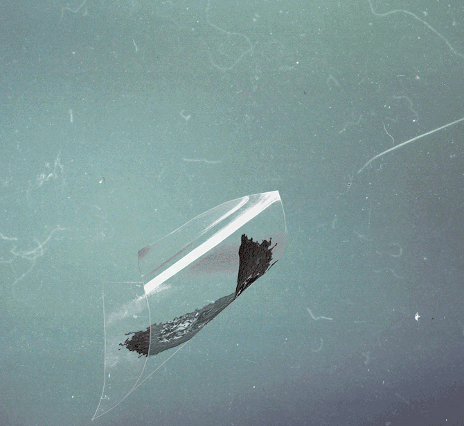
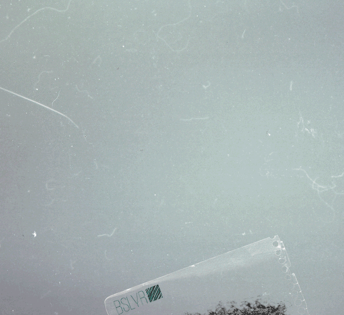
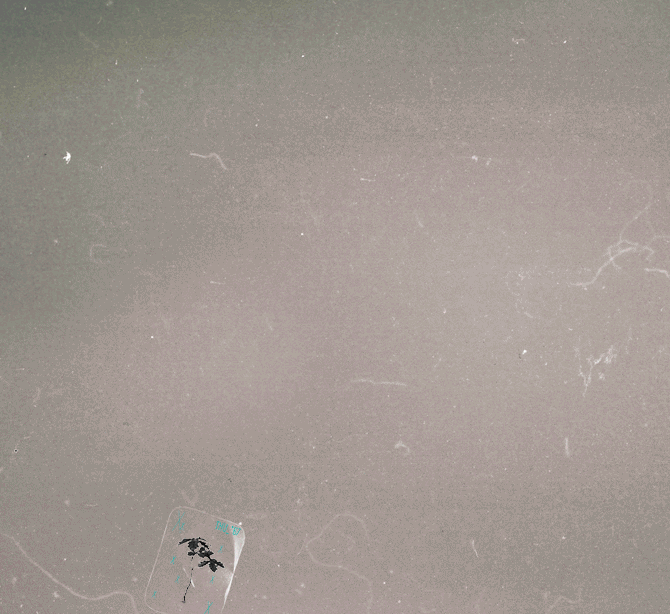
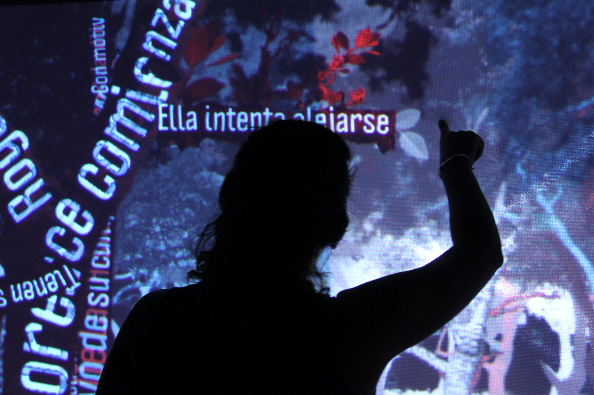
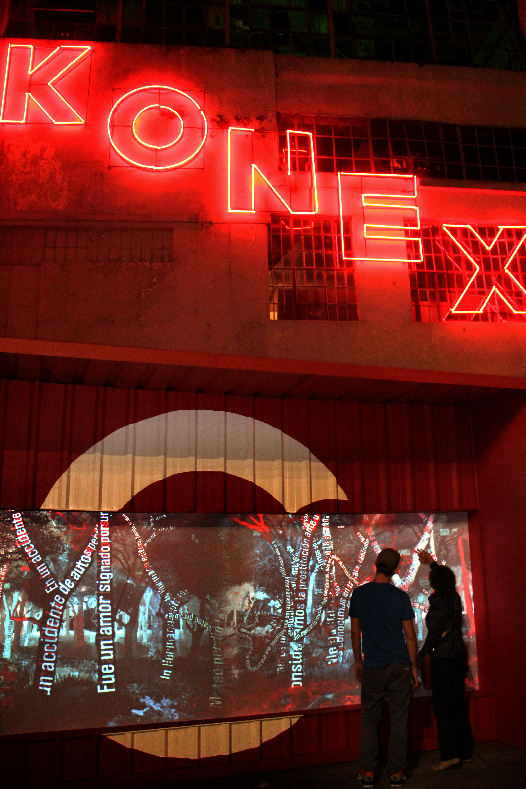
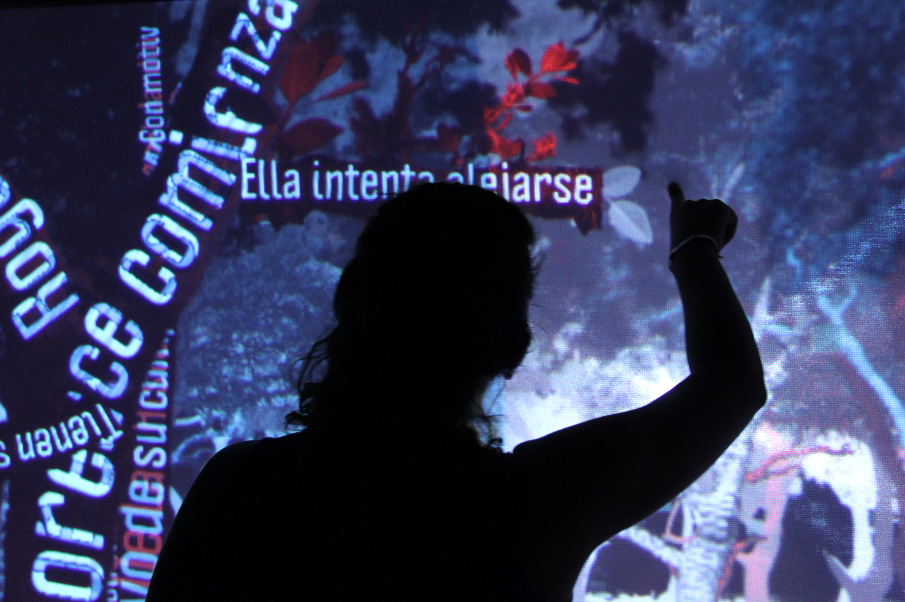
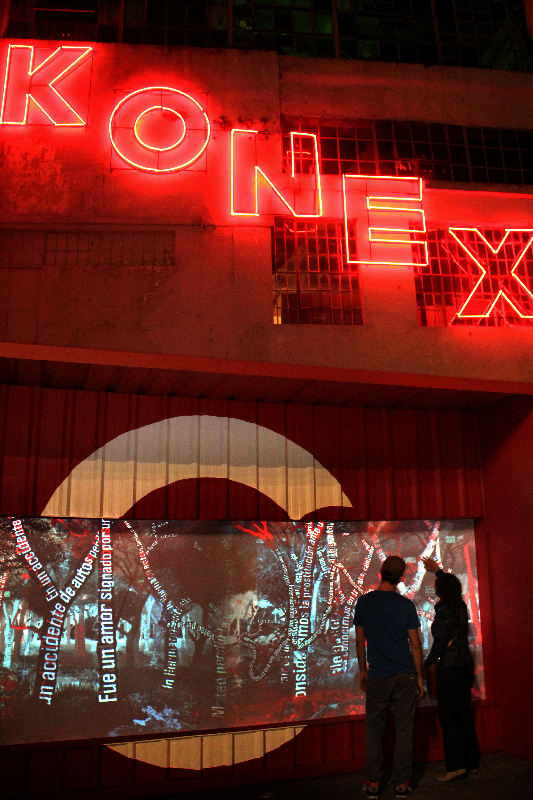

el jardín de las historias (story garden) - 2012
diseño visual para el proyecto “el jardín de las historias”, del grupo de arte interactivo biopus
esta instalación interactiva consiste de dos sistemas. por un lado, un sitio web que permite que los usuarios creen historias de una forma similar a un juego de cadáver exquisito. por el otro, una gran pantalla táctil provee una visualización de todas las historias creadas, en la cual cada historia aparece como un árbol, con cada variación de la misma ramificándose desde el tronco. estas ramas pueden ser expandidas por los usuarios. al final de cada rama se encuentra una manzana, que una vez desprendida, da a luz a un nuevo árbol que continúa la historia.
este proyecto fue encargado por el canal de televisión i.sat, por lo que la estética visual fue basada en su identidad corporativa.
estuve encargado de la creación de todos los gráficos de la pieza, incluyendo animaciones en stop motion de los árboles creciendo.
video del proyecto en la página de vimeo del i.sat
- - - - - - - - - - - - - - - - - - - - - - - - - - - - - - - - - - - - - - - - - - - - - - - - - - -
visual design for interactive art group biopus’ project “el jardín de las historias”
this interactive installation consists of two systems. on one side, a website that allows people to create stories in a manner similar to an exquisite corpse game. on the other, a large touch display provides a visualization of all the stories created, in which each one appears a tree, with all the variations of the story branching off from the trunk. these branches can be expanded by users. at the end of each branch is an apple, that when dropped, gives birth to a new tree that continues the previous story.
this project was commissioned by tv channel i.sat, hence the visual aesthetic was based on their corporate identity.
I was tasked with the creation of all the graphics for the piece, including stop motion animations of the growing trees .
project video on i.sat’s vimeo page
 
 


